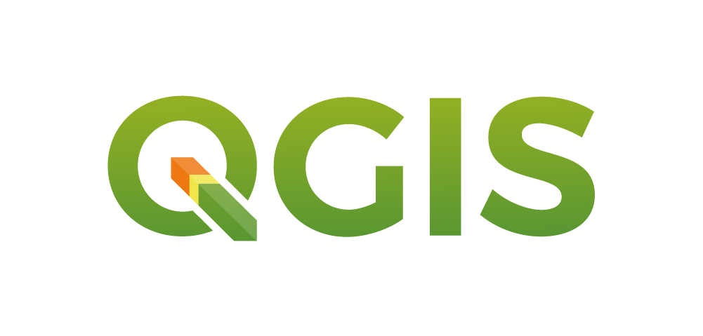

Federico Gómez
Ingeniería Civil · Diseño Urbano · Semestre 2027-1
Sesión 1 · Jornada Continua
Jornada continua de 12:00 m. a 4:30 p.m. en Sala de Cómputo EAFIT: fundamentos conceptuales, pacto pedagógico y primer contacto digital.
| Estructura de la Jornada · Sala de Cómputo EAFIT (12:00 m. – 4:30 p.m.) | Min. |
|---|---|
| Sub-bloque 1 (12:00 m. – 1:50 p.m.): Bienvenida y presentación docente | 15 |
| Conozcámonos y expectativas del curso | 20 |
| Pacto pedagógico, 5 Hitos evaluativos (20% c/u) y reglas de juego | 30 |
| ¿Qué es la geomática? Articulación Civil y Diseño Urbano | 20 |
| Cuenca Escuela La Iguaná y Portafolio Territorial Metropolitano (U01–U30) | 25 |
| Pausa Activa Pedagógica (1:50 p.m. – 2:10 p.m.): Almuerzo ligero y descanso visual | 20 |
| Sub-bloque 2 (2:10 p.m. – 4:30 p.m.): Taller G01 en Sala de Cómputo: visores digitales (IGAC, OSM, Google) | 80 |
| Asignación individual de Unidades Territoriales (U01–U30) y verificación de Teams/OneDrive | 40 |
| Cierre de sesión, empaquetado seguro C:\Temp -> .zip y preguntas | 20 |
| Total de la jornada presencial | 270 |
Presentación docente
Ingeniero Geólogo · M.Eng. en Recursos Hidráulicos, Universidad Nacional de Colombia
Geocientífico en SIATA (sistema de alerta temprana de Medellín) · Docente de Geomática, Ingeniería y SIG
Investigación aplicada en susceptibilidad a deslizamientos, avenidas torrenciales y sensores remotos en los Andes tropicales colombianos.
Enfoque pedagógico: empezamos desde cero absoluto en QGIS LTR y construimos en espejo hacia ArcGIS Pro. Durante las primeras clases de laboratorio, ninguna pregunta técnica es obvia.
Contacto: fjgomezc@eafit.edu.co · Chat de Teams Asesorías: martes 10:00 a.m. – 12:00 m.Conozcámonos
Cuéntennos en una frase cada cosa. Esto ayuda a contextualizar los ejemplos y proyectos individuales en su propio pregrado.
Modalidad 100% Individual · Semestre 2027-1
Cada estudiante es el consultor técnico titular de su propia unidad de análisis durante todo el semestre.
Todas las prácticas, evaluaciones e informes se desarrollan y defienden de manera estrictamente individual, garantizando aprendizaje profundo y dominio operativo en PC.
La cuenca de La Iguaná (46.25 km²) es exclusiva para modelado docente en vivo y casos resueltos; queda prohibida como entrega de estudiantes.
10 quebradas metropolitanas × 3 tramos funcionales (Alto-Ladera, Medio-Transición, Bajo-Confluencia) combinadas con el dígito de identidad D (retiro R = 30 + D m).
En el Sub-bloque 2 de hoy recibirán la asignación oficial de su Unidad Territorial para el semestre.
Las reglas del juego
Es el acuerdo formal del semestre, fundamentado en el Reglamento Académico de Pregrado de EAFIT. Lo concertamos hoy y queda disponible en Teams.
Seis módulos integrados: Geodesia CTM12, SIG Vectorial, SIG Ráster, GNSS, Sentinel-2 y ArcGIS Pro corporativo.
5 Hitos Evaluativos equilibrados al 20% cada uno, con ventanas explícitas de mejora continua.
Estructura modular en GeoPackage (.gpkg), File Geodatabase (.gdb) y rutas relativas portátiles.
Política clara de Inteligencia Artificial (Niveles P/D/O) y comunicación oficial por Teams y correo EAFIT.
Para que no haya sorpresas
Los indicadores clave de gobernanza académica para 2027-1.
Distribución equitativa y balanceada de la evaluación a lo largo de las 16 semanas.
Plazo reglamentario para solicitar segundo evaluador tras la publicación de notas.
Plazo máximo institucional para la retroalimentación y publicación de calificaciones.
Penalidad por entrega tardía justificada, hasta un máximo estricto de 5 días calendario.
Recuperación de puntaje deducido en ventanas de mejora continua (S06 para H1, S15 para H4).
Almacenamiento seguro obligatorio: respaldo al cierre de cada sesión desde C:\Temp.
Cómo funciona cada jueves
Asignatura de 3 Créditos Académicos · 5 UMEs (144 h totales: 72 h presenciales + 72 h de trabajo independiente). Cada sesión de 4.5 horas se desarrolla de forma continua en Sala de Cómputo:
Fundamento conceptual y modelado guiado por el profesor en QGIS LTR sobre la Cuenca Escuela La Iguaná (ejemplo completamente resuelto).
Pausa activa pedagógica y almuerzo ligero integrada dentro de las 4.5 h académicas.
Espejo corporativo en ArcGIS Pro + Transferencia autónoma e individual a su Unidad Territorial asignada (U01–U30) con cierre y empaquetado seguro C:\Temp -> .zip.
Puesto de cómputo individual garantizado con licencias de ArcGIS Pro y QGIS LTR configuradas.
Contenido del curso
Seis módulos progresivos articulados en torno a la modelación geoespacial del territorio.
Módulo 0 · Semanas 1–3
De la escala gráfica al sistema geodésico oficial de Colombia.
Lectura analítica de mapas, escalas numéricas/gráficas, cálculo de áreas y distancias, Datum Bogotá a MAGNA-SIRGAS y Origen Nacional CTM12 (EPSG:9377, Res. 471/2020).
Visores oficiales (Colombia en Mapas - IGAC), Google Earth, OSM y calculadora geodésica.
Base conceptual evaluada en el Hito 1 (20% · Semana 5).
Módulo 1 · Semanas 4–7
Bases abiertas (.gpkg) y corporativas (.gdb) con auditoría topológica rigurosa.
Entorno QGIS LTR y ArcGIS Pro, digitalización con auto-ensamblado, saneamiento topológico, geoprocesamiento multicriterio (Buffer R = 30 + D m, Clip, Intersect) y maquetación A3.
QGIS LTR + ArcGIS Pro + Geoservicios WMS/WFS de GeoMedellín.
H1 (20% · S05) y H2 (20% · S08).
Hito 3 · Semana 9
Línea base vectorial individual consolidada, Lámina A3 y sustentación en estación viva.
Paquete individual con .gpkg y .gdb en EPSG:9377 sin enlaces rotos + Lámina digital A3 (300 dpi) con faja de retiro R = 30 + D m.
Sustentación interactiva en sala: auditoría de topología en vivo y justificación disciplinar (Civil o Diseño Urbano).
Hito 3 (20% · S09 · 18 mar 2027) · Nivel D (IA como asistente de depuración).
Módulo 2 · Semanas 10–12
Modelación matricial continua y zonificación morfométrica de laderas.
DEM ALOS PALSAR 12.5 m, pendientes en grados y %, sombreado 3D (Hillshade), reclasificación POT, curvas de nivel vectoriales, poligonización (DN = 1) y estadísticas zonales.
Calculadora Ráster en QGIS LTR + Spatial Analyst en ArcGIS Pro.
Evaluado integralmente en el Hito 4 (20% · S14).
Módulos 3 y 4 · Semana 13
Auditoría posicional satelital e índices espectrales biespectrales.
Trilateración satelital, filtrado por HDOP <= 2.0 y cálculo de RMSE horizontal. Escena Sentinel-2 MGRS 18NVL, cálculo de NDVI y NDBI con umbral individual U_NDVI = 0.20 + 0.01*D.
QGIS LTR + Band Arithmetic / Raster Functions en ArcGIS Pro.
Evaluado en el Hito 4 (20% · S14 · 29 abr 2027).
Módulos 5 y 6 · Semanas 14–16
Flujos automatizados reproducibles y sustentación ejecutiva del proyecto final.
ModelBuilder (.atbx) en ArcGIS Pro y Diseñador Gráfico (.model3) en QGIS LTR. Ventana de mejora continua de H4 en S15 y maquetación de Dossier A3 de 2 páginas.
Pitch Ejecutivo Relámpago (4 min + 3 min preguntas) ante el auditorio en la Semana 16.
Hito 5: Proyecto Final Individual (20% · S16 · 13 may 2027).
Evaluación Continua · 2027-1
Cinco entregas individuales balanceadas al 20% cada una, alineadas con los RAA del curso.
Cronograma oficial de evaluaciones
Consulte los instructivos específicos y rúbricas analíticas en Teams.
| Hito | Denominación de la Actividad | % | Modalidad / Nivel IA | Semana (Fecha) |
|---|---|---|---|---|
| H1 | Taller Evaluativo 1 en Sala: Geodesia EPSG:9377 y Bases (.gpkg/.gdb) | 20% | Individual en PC · Nivel P | S05 (18 feb 2027) |
| H2 | Evaluación Práctica Integradora 1: Topología, Buffer y Salida A3 | 20% | Individual en PC · Nivel P | S08 (11 mar 2027) |
| H3 | Avance 1 Individual del Proyecto: Línea Base Vectorial y Estación en Vivo | 20% | Individual · Nivel D | S09 (18 mar 2027) |
| H4 | Evaluación Práctica Integradora 2: Terreno DEM, GNSS (HDOP) y Sentinel-2 | 20% | Individual en PC · Nivel P | S14 (29 abr 2027) |
| H5 | Proyecto Final Individual Multicriterio: ModelBuilder, Dossier A3 y Pitch | 20% | Individual · Nivel O | S16 (13 may 2027) |
Para que todo fluya
codigo_apellido_HX.zip con carpetas limpias y sin archivos temporales.
Cero enlaces rotos: se audita descomprimiendo el paquete en un equipo limpio.
Capas almacenadas simultáneamente en GeoPackage (.gpkg) y File Geodatabase (.gdb).
Almacenamiento personal en USB / OneDrive institucional tras cada sesión de sala.
−5% por día calendario de atraso, hasta un máximo de 5 días con justificación.
Puesto de trabajo asignado con software oficial instalado y licencias activas.
Actividad reflexiva individual, 15 minutos
Antes de definir formalmente la geomática, examine estos tres casos y anote qué información prioriza y cuál sacrifica cada uno.
Distancias y ángulos no son métricos, pero nadie se pierde. Sacrifica la geodesia para optimizar la topología y conectividad.
Se percibe como una imagen real, pero es un mosaico compuesto con distorsiones de perspectiva y fechas disímiles.
Geometría milimétrica en coordenadas planas oficiales sin fotografía de fondo. Hecho para linderos legales y obra civil.
Conclusión: todo mapa es un modelo intencional de la realidad que selecciona qué representar y qué omitir según su propósito técnico.
Sección 2
Territorios reales del Valle de Aburrá
Cada estudiante recibe una Unidad Territorial única (U01 a U30) para su proyecto individual.
Metodología Worked-Example Fading
Aprender con un ejemplo completamente resuelto y transferir a un territorio propio.
El profesor modela en vivo cada geoproceso en QGIS LTR y ArcGIS Pro sobre La Iguaná. Muestra cómo se calculan pendientes, se depura topología, se descargan bandas Sentinel-2 y se automatizan modelos.
Cada estudiante transfiere de inmediato el procedimiento a su propia quebrada con sus parámetros únicos: retiro R = 30 + D m y umbral U_NDVI = 0.20 + 0.01*D, construyendo su portafolio paso a paso.
Enfoque disciplinar
La geomática adquiere sentido según las preguntas de su disciplina.
Pendientes críticas, estabilidad de taludes, dimensionamiento de obras hidráulicas, perfiles de flujo, estabilidad de vías y drenaje urbano.
Ocupación de retiros hídricos, espacio público ribereño, conectividad peatonal, accesibilidad y reubicación de asentamientos informales en zonas de alto riesgo.
Aunque el trabajo es 100% individual, compartir la sala de cómputo permite contrastar cómo un civil y un diseñador urbano abordan la misma microcuenca.
Ecosistema Dual Integrado

GeoPackage (.gpkg), geoprocesamiento vectorial, comprobador de topología, álgebra ráster y Diseñador Gráfico de Modelos (.model3).
File Geodatabase (.gdb), Feature Datasets en EPSG:9377, dominios de atributos, Spatial Analyst y ModelBuilder (.atbx).
Adquisición de bandas multiespectrales (Tile MGRS 18NVL), cálculo de NDVI y NDBI y detección de presión urbana.
Auditoría de trazas GPX/CSV, filtrado estricto por HDOP <= 2.0 y cálculo de RMSE horizontal frente a vértices IGAC.
Sección 3
Vocabulario técnico riguroso
Cuatro disciplinas acopladas que conforman la ingeniería espacial moderna.
Ciencia y arte de representar gráficamente el territorio mediante abstracciones geométricas, proyecciones y semiótica visual.
Sistemas computacionales para capturar, almacenar, manipular, analizar y desplegar datos espacialmente referenciados.
Adquisición de información de la superficie terrestre a distancia mediante sensores electromagnéticos satelitales o aerotransportados.
Disciplina integradora que articula geodesia, cartografía, SIG, GNSS y teledetección para la gestión del territorio.
El ciclo de la geomática
De la señal del terreno a la toma de decisiones basada en evidencia.
Datos primarios y secundarios: efemérides GNSS, escenas satelitales Sentinel-2, DEMs y servicios WFS/REST.
Geoprocesamiento vectorial multicriterio, álgebra de mapas ráster, saneamiento topológico y modelos automáticos.
Dossiers infográficos A3 normativos y visualizaciones interactivas que sustentan proyectos de ingeniería y hábitat.
Impacto en los pregrados
Capacidades espaciales demandadas en firmas consultoras y sector público.
Trazado de corredores viales, dimensionamiento de obras hidráulicas, zonificación de amenaza geotécnica, cubicación de tierras y operación de infraestructura con gemelos digitales.
Delimitación de áreas de cesión pública, fajas de protección ambiental, análisis de densidad y cobertura vegetal, formulación de planes parciales y mitigación del riesgo en asentamientos.
Paso a la práctica
Taller G01: Visores institucionales, reconocimiento territorial y asignación individual.
Explorar Colombia en Mapas (IGAC), OpenStreetMap y Google Earth sobre el Valle de Aburrá antes de iniciar cartografía analítica.
Cada estudiante conocerá su microcuenca y tramo asignado (U01 a U30) y registrará su parámetro individual D.
Comprobar credenciales institucionales, acceso a Teams, carpeta en OneDrive y herramientas de sala.
Cierre y preparación
Sub-bloque 1: teoría de escalas, distancias reales y coordenadas. Sub-bloque 2: Taller G02 en PC.
Scale and Resolution (cap. 7, Making Effective Maps) — disponible en Teams para contextualizar la resolución de píxel.
Traer memoria USB física para respaldo local desde C:\Temp en cada sesión de sala.
Docente: fjgomezc@eafit.edu.co · Chat institucional de Teams · Asesorías: martes 10:00 a.m. – 12:00 m.